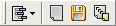

Zapisnik
Ova stranica je ispunjena rezultatima procesa preimenovanja.
Kao dodatak alatnoj traci datoteka koja je uvijek vidljiva, alatna traka za zapisnik je prikazana:

Ovdje su naredbe:
 Tipka "Filter" pokazat æe izbornik koji vam omoguæuje odrediti koje vrste stavki želite vidjeti u zapisniku
(ovisno o njihovom statusu, vidi sljedeæi odlomak).
Tipka "Filter" pokazat æe izbornik koji vam omoguæuje odrediti koje vrste stavki želite vidjeti u zapisniku
(ovisno o njihovom statusu, vidi sljedeæi odlomak). Tipka "Oèisti" æe isprazniti zapisnik.
Tipka "Oèisti" æe isprazniti zapisnik. Tipka "Spremi" æe otvoriti standardni prozor za odabir datoteke, omoguæujuæi vam da odaberete gdje želite spremiti sadržaj zapisnika.
Tipka "Spremi" æe otvoriti standardni prozor za odabir datoteke, omoguæujuæi vam da odaberete gdje želite spremiti sadržaj zapisnika. Tipka "Kopiraj" æe kopirati sadržaj zapisnika u Windows meðuspremnik.
Tipka "Kopiraj" æe kopirati sadržaj zapisnika u Windows meðuspremnik.
Kada je preimenovanje bilo u redu, dodan je redak u zapisniku navodeæi stari i novi naziv datoteke. To je zapisano zeleno.
U sluèaju da datoteka nije preimenovana, bilo jednostavna poruka (plavo) ili greška (crveno) æe se prikazati.
Prvi sluèaj uzrokovan je identiènim odredišnim imenom (ne treba preimenovati datoteku) ili ako datoteka ne sadrži ID3 info (za preimenovanje mp3). To se takoðer može dogoditi
kada izvorna datoteka više ne postoji (npr. ruèno ju premjestite).
Eventualne pogreške mogu biti uzrokovane s puno stvari. Na primjer, ako novo ime veæ koristi druga datoteka, ako ime sadrži nedopuštene znakove ili
ako je datoteka zakljuèana programom. Poruka je obièno povratna poruka Windowsa.
Ako dobijete poruku "Operacija je završena uspješno" navedena kao pogreška, to znaèi da je stvarna poruka izgubljena ili da pogreška nije ispravno otkrivena.
Molimo vas da me kontaktirate ako možete reproducirati problem.
Automatsko spremanje zapisnika u datoteku
To se može uèiniti s opcijom "Spremi zapisnik u datoteku" u Opcije.
Ako je opcija omoguæena, nakon operacije preimenovanja sadržaj zapisnika biti æe pohranjen u tekstualnu datoteku (kodirano u UTF-8).
Ova datoteka ima dva stupca (omeðene tabulatorom). Prvi sadrži "v" za uspješnu operaciju, a "x" za greške. Drugi sadrži
poruku.
Ako opcija "Dodavanje" je takoðer omoguæena, datoteke neæe biti prepisane: novi unosi u zapisnik æe se dodati na kraju.